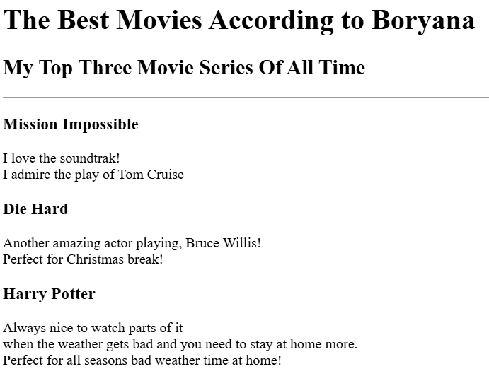

Boryana Cherganova's Portfolio
Communication Consultant | Media Expert |
Storyteller | Content Creator | Journalist |
Abstract Artist
Birthday Invite Project
Movie Ranking Project

Websites Ranking Project
Website Project
About Me
Contact Me